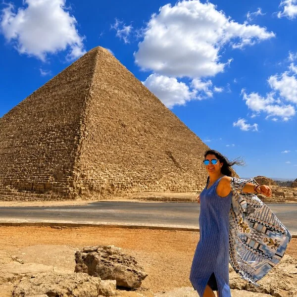
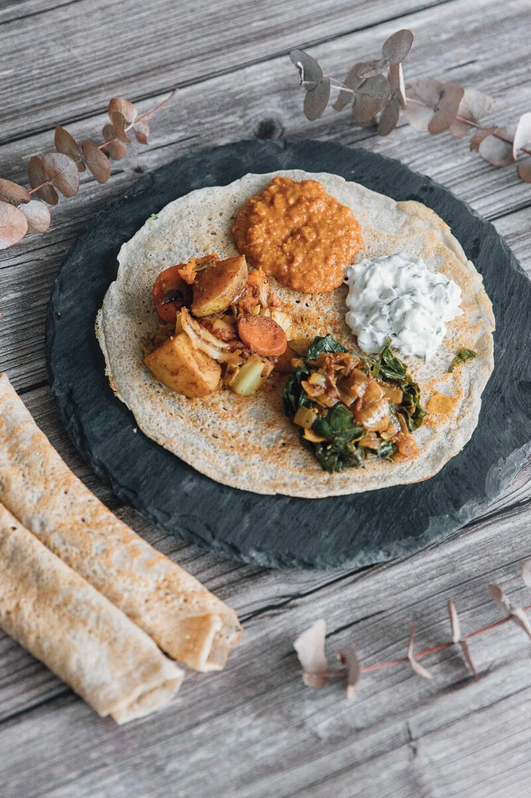
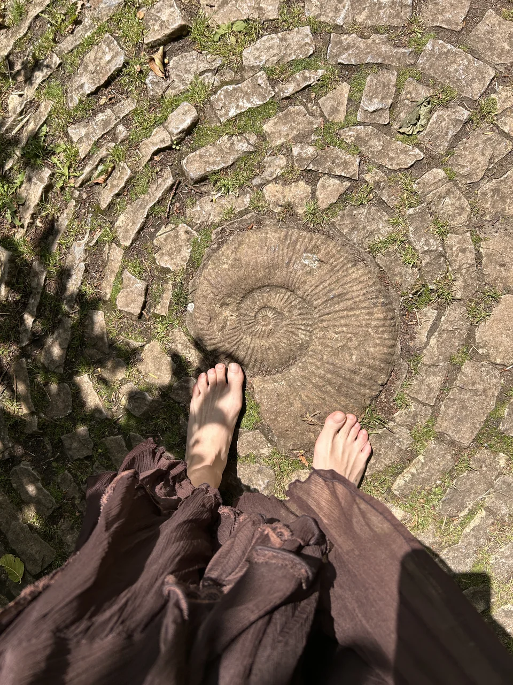
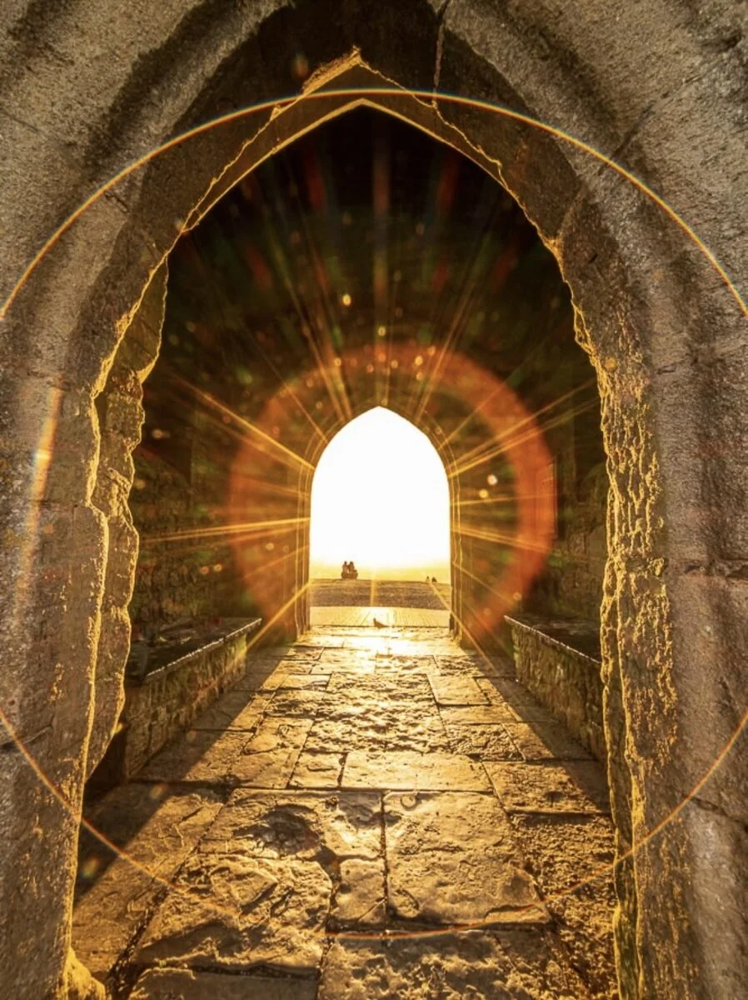

Un rincón para volver a ti
La espiritualidad
también vive
en la vida real.
En el cuerpo cansado, en una pregunta honesta, en cocinar algo rico. Pequeñas formas de volver a escucharte, sin tener que convertirte en nadie más.
A ver qué encuentro


21 días para volver a ti.
Sin hacerlo perfecto.
Una propuesta diaria para salir del piloto automático con escritura, audios y pequeños experimentos. El recorrido completo es gratuito y puedes hacerlo a tu ritmo, sin tarjeta.
Descubrir la aplicación¿Qué te vendría bien hoy?
Elige lo que te llame. Puedes cambiar de idea en cualquier momento.
Voy en automático.
¿Y ahora qué?
Una primera parada, sin tener que reorganizar tu vida entera.
Leer la guía ↗ 02 ESCUCHAUn audio y
un poco de aire.
Meditaciones y respiraciones para bajar una marcha.
Ver las prácticas ↗ 03 HISTORIASLeer algo que
me haga pensar.
Viajes, cambios y el lío precioso de estar viva.
Abrir el diario ↗ 04 COCINA ALQUÍMICALa magia también
se pone el delantal.
Recetas y rituales cotidianos, sin ingredientes imposibles.
Ir a la cocina ↗Si no sabes por dónde empezar, empieza por donde estás.
También hay espacio
para una pregunta concreta.
Ver todas las propuestas 
No tengo todas las respuestas.
Sí muchas ganas de buscarlas.
Vuelve la Luz nace de mi propio camino entre cocinas, viajes, silencios, cambios y aprendizajes. Aquí la espiritualidad tiene los pies en la tierra: cabe en una respiración, una receta, una carta o una conversación sincera.
Te cuento mi camino